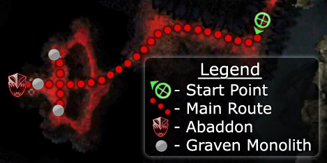

Click to enlarge · Local cache · Wiki
It is time to destroy Abaddon once and for all, and to save the world from Nightfall . This mission has a simple objective; to kill Abaddon before he breaks completely free from his bindings. Compared to the previous mission, Gate of Madness , this mission is simpler.
Region: Realm of Torment · Mission: 17 of 20 · Type: Cooperative
Destroy Abaddon.
Run along the passage until you get to the end, there is only one way you can go. You'll come to a bridge which looks down on the spot where Abaddon is imprisoned. There are three paths down to Abaddon from here, two to the binding points for each of his hands which are situated to the left and right and one which leads to where his head is bound in the middle. Two Graven Monoliths guard each of the binding points, a maximum of six are on the map at any one time.
Abaddon will break free as you approach and you must kill the Monoliths to rebind him and get the opportunity to attack him. It is best to attack the Monoliths at the hands first, as killing those at the head first, without first rebinding the hands means the Monoliths will respawn at the head, wasting your effort.
When the Monoliths at each of the binding points are destroyed Abaddon's head will be lowered and you will have a short while to lay down as much damage on him as possible before he breaks free and you have to start over again at rebinding the hands to get another opportunity to attack. It will take several cycles of binding, damaging and breaking-free before Abaddon is killed. Get into a rhythm, agree before-hand which side you will go to first each time so your party can kill off the Monoliths with least effort. Each time you rebind part of Abaddon by defeating a pair of Monoliths you will receive a morale boost. Every time Abaddon is fully bound, he loses 1000 health.
Abaddon isn't entirely defenseless while you complete this ritual, he has a number of attacks which can be rather frustrating and damaging for a party. Of particular note is Words of Madness which causes the party to be knocked down, dazed and to take damage; key to coping with this is timing your skill use to avoid getting interrupted. Of particular note is when Abaddon is in his prone state, invariably this skill is used about 5 seconds after he is bound just when you're launching into your best spell. The party has to be prepared to remove daze or to operate with it on. Party healing is a good counter to the area of effect damage which Abaddon deals.
Finally, Torment Claws appear from time to time during the battle. They have a nasty area of effect attack which can devastate your party if they're not noticed and taken care of. Keep a wary eye out for them to interrupt their attack skill and kill them.
See walkthrough and objectives for bonus details (if any).
No dedicated Hard Mode section on the wiki — expect tougher foes and adjusted mechanics. See walkthrough notes.
See wiki for boss list (or none listed).